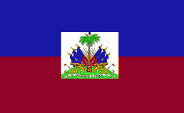

TDJ Haïti/Ayiti
TDJ Haïti/Ayiti: Terre des jeunes Haïti/Ayiti
Terre des Jeunes Haïti/Ayiti est représenté actuellement par la Fondation Écosophique Caonabo (FÉCA) qui est une organisation enregistrée légalement en Haïti.
En effet, en ce qui concerne l’environnement, la Fondation Écosophique Caonabo partage les mêmes préoccupations et la même vision que l’organisation Terre des Jeunes tel qu’elle l’a défini dans ses statuts.
Bien que les objectifs et les actions de la FÉCA soient plus larges que ceux de Terre des Jeunes : ( la FÉCA met en avant des intentions culturelles telles que la réhabilitation et la protection des cultures et des modes de vie traditionnels des Peuples Naturels, Autochtones ou Primordiaux), la FÉCA agit aussi tout à fait dans le domaine de l’environnement car la protection de la Nature et la lutte contre tous les types de pollutions sont des priorités pour permettre la survivance des modes de vies indigènes. Ainsi, la Fondation Écosophique Caonabo est engagée dans la préservation et la protection de l’environnement, et la reforestation, comme la préservation de la biodiversité, lui sont des objectifs prioritaires et incontournables.
Ainsi, selon le protocole d'accord fait à Port-au-Prince le 5 juin 2008, la Fondation Écosophique Caonabo (FÉCA) est disposée à représenter Terre des Jeunes Haïti/Ayiti et d’assumer la coordination nationale pour le pays Haïti et pour l’Île d’Ayiti (Haïti et Saint-Domingue).
Contact
Antji Daniel
OUACHÉE
Coordinateur
National Terre des
Jeunes pour
Haïti
c/o Fondation
Écosophique Caonabo
: FÉCA (www.fondationecosophiquecaonabo.org)
Rue Laurier,
Impasse Latortue
#1, Delmas 48,
Port-au-Prince,
Haïti WI
Tél : (509) 22 49
41 89 ; (509) 34 57
95 11 ; (509) 38 45
61 63.
Courriel :
antjilela@yahoo.com
;
terredesjeuneshaiti@yahoo.frLire
la
suite
TDJ Haïti/Ayiti: Bienvenue à Terre des jeunes Port-au-Prince, Haïti
Bienvenue sur Terre des jeunes Port-au-Prince!
Cliquez ici pour la galerie photo
(à venir)
(SVP édier ce texte pour y mettre vos informations)
TDJ Haïti/Ayiti: Assemblée Générale de la COHAIV : Coalition Haïtienne des Volontaires

À l’occasion de
la première
Assemblée Générale
de la COHAIV :
Coalition Haïtienne
des Volontaires, le
26 septembre 2012 à
Port-au-Prince, La
Fondation
Écosophique Caonabo
(FÉCA) qui
représente Terre
des Jeunes
Haïti/Ayiti
(TDJHA), en tant
qu’une des
organisations
membre fondateur,
expose le résultat
de ses activités.
Ainsi, dans l’élan
de l’exposition
faite le 22
septembre à
l’occasion de la
Journée
Internationale de
la Paix, la FÉCA
présente une
exposition en deux
parties.
D’une part la
valorisation des
déchets à travers
l’artisanat
(plumiers faits à
partir des boites
de conserves ;
valises en crochet
faites à partir des
sachets plastiques
; décorations et
masques réalisés à
partir de
bouteilles et de
gallons en
plastique ;
peintures sur
carton ;
reconstitution de
feuilles de papier
; etc.). Aussi, la
valorisation des
déchets de biomasse
(papier, carton,
sciure de bois)
comme combustibles
sous forme de
briquettes ou de
pellètes, qui
accompagnent les
réchauds à pyrolyse
d’Eko Ayiti.
D’autre part la
présentation
d’objets témoignant
de la culture et du
mode de vie des
Premiers Peuples
d’Amériques et
d’Ayiti vus pour
comme des
précurseurs de
l’Écologie et de la
sauvegarde de
l’environnement et
aussi comme culture
de la Paix. Pour
rappeler au public
les liens entre
Paix et Sauvegarde
de l’Environnement
on a évoqué les
slogans tels que «
Yon bon Anviwonman
egal la Pè » (Un
bon Environnement
c’est la Paix) ; «
Plante yon Pyebwa
se Konstwi la Pè »
(Planter un Arbre
c’est construire la
Paix) ; « Yon bon
Anviwonman se plis
riches, se mwens
mizè, se plis la Pè
» (Meilleur est
notre
Environnement,
c’est plus de
Richesses, c’est
moins de Misère,
c’est plus la
Paix).Lire
la
suite
TDJ Haïti/Ayiti: FÉCA/TDJ Haïti/Ayiti expose à la Journée Internationale de la Paix 2012
À l’occasion de la Journée Internationale de la Paix 2012, différentes organisations haïtiennes locales œuvrant pour la Paix se sont regroupées pour marquer cet événement le samedi 22 septembre au Champs de Mars, à Port-au-Prince. Facilité par la Minustah, avec la coordination de Viva Rio et la présence du MJSAC, cette commémoration a pris la forme d’un petit festival culturel et artistique avec des activités sportives, des danses, des scénettes de théâtre, des chants et des stands d’exposition d’objets artisanaux et de sensibilisation à la Paix. Avec un support matériel pratiquement inexistant les différentes organisations présentes ont fait tous leurs efforts pour que cette activité se réalise et sa réussite était presque un défit par rapport aux contraintes et à la conjoncture locales.Lire la suite
TDJ Haïti/Ayiti: Réchaud Eko-Ayiti
Le réchaud Eko-Ayiti est un réchaud amélioré qui peut s'utiliser avec du charbon ou encore des briquettes de fibres végétales compressées (feuilles, sciure de bois, bagasse, etc.).
Dans les photos, nous pouvons voir l'utilisation avec une briquette. On la coupe en morceaux, on peut mettre un peu d'accélérant pour démarrer la première briquette (essence, alcool ou autre), ensuite on allume et le tour est joué. On peut régler l'apport d'air à l'aide d'une petite ouverture dans le bas du réchaud.
Sur la dernière photo, on peut aussi utiliser des "pellets" ou granules de fibre végétale comme combustible.
Voir aussi le vidéo : http://www.youtube.com/watch?v=jrYntoJDmB0
Pour plus
d'informations,
contactez :
Antji Daniel
OUACHÉE
Coordinateur
National Terre des
Jeunes pour
Haïti-Sud
c/o Fondation
Écosophique Caonabo
: FÉCA
Rue Laurier,
Impasse Latortue
#1, Delmas 48,
Port-au-Prince,
Haïti WI
Tél : (509) 22 49
41 89 ; (509) 34 57
95 11 ; (509) 38 45
61 63.
Courriel :
antjilela@yahoo.com
;
terredesjeuneshaiti@yahoo.fr
TDJ Haïti/Ayiti: Communiqué L’ONG Terre des Jeunes prend le rôle du relais Planèt’ERE-Haïti

Le 5 août 2012,
après plusieurs
débats et réunions,
les membres de
Terre des
Jeunes-Haïti ont
créé le Comité
National
Planet’ERE-Haïti.
Ainsi, le
procès-verbal de la
réunion de Terre
des Jeunes-Haïti à
son siège social
des Gonaïves,
annonce à l’ONG
internationale
francophone
Planèt’ERE,
l’élection des 5
membres suivants au
Comité National
Planet’ERE-Haïti
(CNPH)
- 1. Augustin Dieuseul , Président ( Centre Haïti / ville des Gonaïves)
- 2. Zacharie Alcimé , Co-président ( Nord Haïti/ Ville du Cap Haitien)
- 3. Joseph Jonny , Trésorier ( Centre Haïti / ville des Gonaïves)
- 4. Lounes Felicin , Chargé de communication ( Ouest Haiti/ ville Port au prince)
- 5. Augustin Sophia, Secrétaire (Centre Haïti / ville des Gonaïves)
Tous bénévoles
et membres de Terre
des Jeunes Haïti,
ils expriment leur
volonté et leur
engagement à
représenter l’ONG
Planèt’ERE sur le
territoire
haïtien.
Dans les rencontres
qui vont suivre, le
CNPH précisera les
mandats qu’il
compte exécuter au
profit de
l’ONG-Planèt’ERE,
conformément au
document
d’orientation
Planèt’ERE-Nationaux,
dont il a pris
connaissance et qui
a conduit à la
formation du
CNPH.
En ma qualité de
membre conseiller
du CA de l’ONG
Planèt’ERE et
représentant
national,
j’adresserais un
rapport à
l’exécutif de l’ONG
Planèt’ERE afin
d’obtenir
l’accréditation qui
fera de Terre des
Jeunes-Haïti, le
représentant
officiel de l’ONG
Planèt’ERE en Haïti
et ainsi augmenter
son rayonnement sur
le territoire
haïtien
Augustin
Dieuseul
Président de Terre
des Jeunes-
Haïti
Gonaïves
Haïti, le 5 Août
2012
Gonaïves, Haïti, TDJ Haïti/Ayiti: énergie alternative au charbon de bois

{kind=link}
{kind=link}
{kind=link}
{kind=link}
{kind=link}
{kind=link}
{kind=link}
{kind=link}
{kind=link}
{kind=link}
{kind=link}
{kind=link}
{kind=link}
L’équipe de
Terre des Jeunes
Gonaïves et celle
de Port au
Prince
coopèrent depuis
plusieurs mois sur
un projet de
recyclage avec
les
jeunes des Gonaïves
de façon à
fabriquer des
briquettes comme
énergie
alternative qui
devrait substituer
le charbon de bois,
cette
pratique
du charbon de bois
qui devient
actuellement un des
problèmes
majeurs
liés à la
dégradation de
l’environnement en
Haïti.
Une vingtaine de
jeunes Garçon se
sont réunis au
jardin
communautaire
de Terre des Jeunes
pour suivre
attentivement une
formation sur
la
fabrication moderne
des briquettes, il
est à noter que
l’équipe de
Terre des Jeunes
Gonaïves est en bon
débat avec les
représentes
du
Programme
Alimentaire
Mondial, une façon
à encourager la
migration des
cantines scolaire
dans la région du
charbon aux
briquettes,
d’où
source de création
d’emploi.
Anjti et Joël,
respectivement
coordonnateur et
vice-coordonnateur
du
mouvement Terre des
Jeunes en Haïti de
14 ans étaient les
deux
principaux
intervenants de
cette belle journée
formation.
Joël
TDJ Haïti/Ayiti: Représentation de Terre des Jeunes Haïti/Ayiti
Voici de bonnes nouvelles de Terre des Jeunes Haïti /Ayiti
À voir sur le site du journal haïtien Le Nouvelliste (cliquez sur les liens)
"La participation haïtienne au parlement mondial de la jeunesse pour l'eau" article du Nouvelliste 4 avril 2012
Alexandra V.
Destin Pierre
déléguée par la
COHAIV (Coalition
Haïtienne des
Volontaires dont la
Fondation
Écosophique Caonabo
/ Terre des Jeunes
Haïti/Ayiti est
membre) pour
participer au nom
d'Haïti au 6ème
forum mondial de
l'eau à Marseille
(France) est aussi
membre de Terre des
Jeunes Haïti/Ayiti
en tant que
responsable
culturel.
Elle témoigne :
"Mon engagement
pour l'eau : Il ne
peut y avoir de
protection de l'eau
sans protection de
l'écosystème qui
l'entoure : Avec
Terre des
Jeunes-Haïti, j'ai
travaillé à
revaloriser les
moeurs indiennes
qui ont prévalu en
Haïti à l'époque
précolombienne, où
la vie a été en
constante harmonie
avec la
nature..."
http://www.lenouvelliste.com/article.php?PubID=1&ArticleID=103962&PubDat...
Nous pouvons la
féliciter car elle
est notre porte
drapeau auprès de
la Jeunesse à
travers son
engagement pour son
pays où il y a tant
de travail à faire
dans le domaine de
l'environnement et
la gestion de
l'eau...
Merci Alexandra
pour ton
dévouement.
Antji
Le même jour dans le même journal un autre article métant en valeur l'engagement de la Fondation Écosophique Caonabo pour la résurgence de la mémoire des Aborigènes d'Ayiti qui avaient fait de l'Île un véritable Paradis...
Commémoration de la cinq cent dix-septième année du combat de la Vega Réal organisée par des jeunes étudiants qui avaient été sensibilisés à cette cause étant jeunes élèves à travers nos conférences et qui ont pris le relai.Lire la suite
TDJ Haïti/Ayiti: Gestion des Risques et Désastres et de Secourisme Communautaire
L’OIM donnera
une formation en
matière de Gestion
des Risques et
Désastres et de
Secourisme
Communautaire pour
25 membres de la
Fondation
Écosophique Caonabo
et du Réseau Terre
des Jeunes de la
zone
métropolitaine.
L’objectif de cette
formation est de
donner les
connaissances
pratiques,
techniques et
organisationnelles
à des jeunes actifs
au niveau de leur
communauté afin
qu’ils puissent
intervenir
efficacement auprès
des populations
locales en cas de
catastrophe :
Cyclones,
Inondations,
Épidémie,
Tremblements de
Terre, accidents,
etc.
Les jeunes choisis
pour la formation
devront être
capables de former
d’autres membres de
FECA-TDJHA et
d’autres personnes
de leur
communauté.
Une évaluation
notée sera
effectuée en fin de
formation et ceux
qui auront le
nombre de points
nécessaires
bénéficieront d’un
certificat.
5 jeunes parmi
Terre des Jeunes de
Delmas seront
sélectionnés en vue
de créer une
cellule d’urgence
en cas de
catastrophe.
La formation va se
dérouler au siège
de la Fondation
Écosophique Caonabo
à Delmas 83, rue Dr
Noël #3, du lundi
au vendredi à
raison de 3h par
jour soit de 10h à
1h soit de 11h à
2h. (la date sera
précisée
ultérieurement. Si
vous avez des
problèmes vis-à-vis
de l’horaire mais
que vous êtes
intéressés signaler
le.)
L’INSCRIPTION
:
Pour pouvoir être
candidat à la
formation il faut
que le membre
:
1. Vienne remplir
une fiche
d’inscription au
Siège de la FÉCA à
Delmas 83, rue Dr
Noël, #3. Dans la
fiche
d’inscription, il
s’engage à :
a. Suivre la
totalité de la
formation
b. être disponible
pour retransmettre
la formation
c. être actif
auprès de la
population en cas
de
catastrophe
d. s’engage à payer
les frais demandés
une semaine avant
la formation s’il
est
retenu.Lire
la
suite
Gonaïves, Haïti, TDJ Haïti/Ayiti: 10e anniversaire de l'Année internationale des volontaires


L’année 2011
marque le dixième
anniversaire de
l’Année
Internationale des
Volontaires
(AIV+10) à travers
le monde. En cette
circonstance, en
Haïti plus d’une
vingtaine
d’organisation
volontaires
supporté par le
Ministère de la
Jeunesse des Sports
et de l’Action
Civique (MJSAC) et
le programme des
Volontaires des
Nations Unies en
Haïti (VNU) ont
formé une équipe
dénommée
‘’Coalition
Haïtienne pour
l’Année
Internationale des
Volontaires’’
(COHAIV).
Plusieurs activités
ont marqués cette
célébration,
telles : Un
grand concours
national artistique
et littéraire, une
journée Nationale
de nettoyage, des
Conférences débats,
Match de football
entre Volontaires
dominicains et
haïtiens, des
ateliers de
réflexions sur le
Volontariat et une
grande cérémonie
officielle. Toutes
ces activités ont
été coordonnées par
Junior Mercier,
coordonateur
national AIV+10 en
Haiti.
Terre des Jeunes
Gonaïves s’est
impliquée dans ces
activités avec
Lounès FELICIN,
ancien président du
réseau des jeunes
TDJ dans
l’Artibonite qui
est à Port au
Prince pour ses
études
universitaires qui
a coordonné le
grand concours
national pendant 3
mois. Lounès se dit
fier et satisfait
de continuer a
travaillé comme
Volontaire. Il
s’est réjouit
également de
travaillé avec
l’équipe de Port au
Prince qui a donné
une forte
contribution en
ressources humaines
à la COHAIV. Lounès
FELICIN a participé
à la COHAIV comme
representant de TDJ
Port au Prince et a
coordonné le groupe
responsable du
concours national
sous le thème ‘’Ann
fè konbit pou
rebati Ayiti nan
lapè pou yon
devlopman dirab’’
et également les
deux journées de
conférence les 29
et 30 Novembre 2011
autour du thème
« Le
Combitisme,
l’impact du
volontariat sur la
réalisation des OMD
et la cohésion
sociale au sein des
communautés »
Gonaïves, Haïti, Gros-Morne (Haïti), Delmas, Haïti, St. Marc (Haïti), Léogâne, Haïti, TDJ Haïti/Ayiti, Québec, Port Margot, Haïti, MHOJERE (Haïti), Cayes-Jacmel, Haïti: En mémoire du séisme du 12 janvier 2010 en Haïti
Vous voulez ajouter votre message? Laissez un commentaire ici!
Les membres de toutes les antennes de TDJ de par le monde ont une pensée spéciale pour les membres des antennes haïtiennes de Terre des jeunes, leurs proches, et toute la population haïtienne. Nous soulignons spécialement le travail sans relâche des membres de TDJ et de la jeunesse haïtienne pour se relever de la difficile année 2010 qui leur a été imposée; les sections haïtiennes demeurent le fer de lance du mouvement transnational de Terre des jeunes, et une inspiration profonde pour nous tous.
Voici
un message
de TRAGELUS
Wilson DG AJGR
Gros-Morne
(Haïti):
Puissent ces vœux, au-delà de chacun de nous et des nôtres, rejoindre notre pays meurtri !
Paix
Union
Des
joies
Des espoirs
Amour.Succès
Des
réalisations
RespectHarmonie
Santé et
solidarité
Bonheur et
humilité
ConfraternitéPureté
Amitié Sagesset
pardon
égalitéLiberté et
chance
Sincérité
et .Fraternité
Équilibre foi,
santé et
dignitéBienveillance,
force et
bonté De la
patience.
De la
ténacité
Prospérité
Et santé
Cordialement et Bonne Année 2011 à toute l’équipe Terre des Jeunes,
Et ceci de nos collègues de Côte d'Ivoire, eux-mêmes aux prises avec une situation très difficile dans leur pays:
"En ce jour de commémoration du premier anniversaire du séïsme dee votre pays, j'aimerais très sincèrement vous apporter ma compassion, et l'appui moral à toutes les familles ayant perdus un membre chèr, de tous les membres de TERRE DES JEUNES Cöte d'Ivoire.
Ces évenements ne doivent pas être une fatalité mais un facteur de recherche au plus profond de vous de solution viables et durables pour les jours et années avenir.
Pour ce avenir, il nous incombes de gerer de façon efficiente nos ressources energetique certe, mais encore mieux, former les ressources humaines nécéssaires, informer la population, potentiel usagers et clients de nos différents trouvailles.
QUE DIEU VOUS BENISSE
Voici un message de Antji Daniel Ouachée coordinateur de TDJ Haïti:
FONDATION
ÉCOSOPHIQUE
CAONABO:
FÉCATERRE
DES JEUNES
HAÏTI/AYITI :
TDJHA
12 JANVIER
2011 :
JOURNEE DE
RECUEILLEMENT ET DE
REFLEXIONLire
la
suite
Pour la journée de commémoration du souvenir du séisme de magnitude 7,1 du 12 janvier 2010 en Haïti, Terre des Jeunes Haïti/Ayiti invite tous ses membres à travers le pays au recueillement en mémoire à toutes les victimes qui perdirent la vie.
Plus particulièrement, nos pensées se tourneront vers nos valeureux membres qui furent parmi les 250 000 décédés :
- CARL PRESLY : secrétaire de Terre des Jeunes Léogâne
- OXIATUS OLICE : Secrétaire Général de l'Association des Jeunes de Gros-Morne pour le Reboisement (AJGR), décédé à Port-Au-Prince.
- WODELINE TIDE : membre AJGR/TDJGM
Nous pensons aussi à nos membres qui ont été dans la douleur par la mort de certains de leur proches tel que Joël Dieuseul Augustin (Président de Terre des Jeunes Gonaïves) qui a perdu sa sœur avec son mari et son bébé de quatre mois.
Certains des membres de Terre des Jeunes considèrent que nos ex amis partis dans l’au-delà sont toujours proche de nous spirituellement. Ils continueraient à nous donner leur énergie et leur support pour nous permettre de concrétiser nos objectifs. Ils seraient toujours là à participer à nos Fêtes de l’Arbre et nous inspireraient dans le montage de nouveaux projets. Alors, rappelons nous leur mémoire dans nos prières lors de nos réunions.
À l’occasion de cette journée de « N’a Sonje » (« Nous nous souvenons » en créole), nous suggérons à tous de poursuivre ce moment par une réflexion sur ce que peut apporter Terre des Jeunes dans les processus de reconstruction et de refondation du pays en se rappelant que Terre des Jeunes agit pour le développement des populations en prônant le volontariat et l’éducation environnementale.
Ainsi, Terre des Jeunes travaille en priorité sur les thématiques environnementales avec la reforestation comme objectif le plus pressant. TdJ intègre obligatoirement les dimensions de la protection de l’environnement et du respect de la diversité culturelle dans ses actions qui peuvent toucher tous les secteurs du développement économique et social.
C’est ce que nous pouvons appeler l’Écodéveloppement et la promotion de l’Écosophie (« la sagesse de la gestion de l’environnement » pour un développement équitable).
L’Écosophie, pratiquée par les Peuples Premiers ou Primordiaux, considère que l’Être Humain fait parti de l’écosystème où il s’implante, que toutes les activités humaines doivent respecter les équilibres écosystémiques et s’intégrer dans les cycles naturels de façon à ne pas engendrer de pollution de quelle nature que ce soit. C’est cette conception des interrelations entre l’Être Humain et son environnement, avec une approche modernisée, que se définit aujourd’hui « l’Économie Bleue » ou « Blue Economy » avec Gunter Pauli.
Ainsi, les membres de Terre des Jeunes s’engagent à poursuivre leurs interventions au niveau du développement local avec cette préoccupation écosophique en toile de fond.
Ceci peut aussi se traduire dans leur vie de tous les jours, dans leur vie familiale ou professionnelle afin de tendre à transformer leur mode de vie dans le but de réduire leur impact écologique. Ainsi, au fur et à mesure apporter des changements dans leurs habitudes, dans leurs comportements et dans leurs modes de consommation car chacun prend conscience (à son rythme) que chacun de ses gestes a un effet positif ou négatif sur l’environnement : son choix d’énergie, sa façon de se transporter, son régime alimentaire et la provenance de ses aliments, la gestion de ses déchets, le choix de ses vêtements, les matériaux de sa maison, etc.
Alors, Terre des Jeunes propose entre autre les actions facile à entreprendre à l’échelle locale
- le reboisement non seulement pour compenser le dégagement du gaz carbonique et refixer le carbone dans la production de bois mais aussi pour recréer les Forêts protectrices et génératrices de la biodiversité ;
- le recyclage sélectif des déchets ;
- la fabrication de « l’éco-compost » qui réintègre tous les éléments résidus de l’usage des végétaux pour la satisfaction des besoins des gens et des animaux : ( déchets de cuisine, cendres de bois, déchets de jardins et agricoles, excréments humains et animaux, etc.)
- la promotion des énergies renouvelables
Mais aussi, Terre des Jeunes encourage toute intervention qui améliore les conditions de vie des gens de sa localité ou de son quartier dans les domaines de l’éducation, la santé, l’assainissement, la création d’emplois, la culture, les infrastructures, les services, etc. mais toujours en cherchant les solutions qui réduisent l’impact environnemental.
Ainsi, certaines actions ont été développées par certaines de nos antennes locales telle que : des jardins scolaires, la promotion du réchaud à pyrolyse de biomasse d’Eko Ayiti qui nous permet de cuire à manger sans avoir à détruire les arbres pour faire le charbon de bois, la protection des bassins versants, la gestion des déchets solides ménagers, etc.
Terre des Jeunes aussi s’intéresse à développer : des systèmes de cuisson familiale avec la récupération du biogaz, la purification des eaux usées à travers des marais filtrants, les latrines sèches et d’autres écotechnologies en partenariat avec d’autres organisations écologiques.
C’est sûr que toutes ces réalisations nous demandent des moyens, nous devons réfléchir aux stratégies pour les obtenir en sollicitant la participation locale et le volontariat. De plus, de nombreux groupes déjà constitués et d’autres particuliers découvrent le mouvement Terre des Jeunes et veulent s’y intégrer. Il devient de plus en plus nécessaire de trouver les moyens et la forme à donner à une coordination nationale pour jouer son rôle de représentativité, de point de rediffusion de l’information, d’échange d’expériences, etc.
Terre des Jeunes Haïti/Ayiti vous remercie pour nous faire parvenir vos réflexions et vos suggestions et formule des vœux de croissance du réseau national haïtien et de réalisation de nombreux nouveaux projets novateurs, ainsi que des vœux de santé et de prospérité à tous ses membres pour cette nouvelle année 2011.
Delmas 83 le 11
janvier
2011
Antji Daniel
Ouachée
Coordinateur
National
TDJ Haïti/Ayiti: Haïti -- projet de FÊTE DE L’ARBRE 2010 Au Camp de Corail Cesse Lesse
Suite au séisme du 12 janvier 2010, en vue de vider les camps provisoires des victimes qui ont perdu leurs habitats, des nouveaux camps sont implantés dans les alentours de la zone métropolitaine, là où il n’y avait rien.
A environ une heure de voiture, par la National n°1, après Bon Repos au cœur d'une vaste plaine au pied du Morne à Cabri, considérablement dénudé, le camp de Corail Cesse Lesse est un des premiers camps qui doit accueillir 1500 familles parmi les 180 000 personnes qui vivaient dans le camp provisoire du « Pétion-Ville Golf Club » (PVGC) situé à Delmas 42-48 : le plus grand camp d'hébergement des sinistrés du séisme du 12 janvier. Les infrastructures actuelles au camp de Corail accueillent environ 6.000 personnes. A terme, lorsque tout le site d'une superficie de 20 carreaux de terre, sera aménagé, il pourra accueillir avec toutes les facilités, entre 19 et 20 000 déplacés. Chaque famille a droit à un petit bout de terrain.
En lire plus sur ce projet de faire une fête de l'arbre ici.
Gonaïves, Haïti, TDJ Haïti/Ayiti: Vers une architecture différente en Haïti?
Quelques ressources intéressantes sur l'architecture alternative:
- lire le
mot du Président de
TDJ à ce
sujet.
-
Guide sur les
constructions
parasismiques aux
Antilles.
- L'Open
Architecture
Network (en
anglais) contient
plusieurs projets
intéressants.
Gonaïves, Haïti, Gros-Morne (Haïti), Delmas, Haïti, Léogâne, Haïti, TDJ Haïti/Ayiti: Notre coeur est tourné vers Haïti
Nous tenons à souligner la grande tristesse et la grande inquiétude dans laquelle tout le réseau de TDJ est plongé suite aux tristes événements qui ont ravagé la ville de Port-au-Prince et le pays tout entier.
Le président de TDJ Gonaïves, Dieuseul Augustin (Joel) et Mario Rizzolio de la Minustah étaient par hasard à Montréal au moment du séisme. Ils tentent désespérement d'avoir des nouvelles de leur famille et de leurs amis à Port-au-Prince. Nous savons déjà que certains d'entre eux ont perdu la vie dans cette catastrophe sans nom. Nous pensons à la soeur de Joel, son mari et son bébé de quatre mois.
 Le
27
janvier
nous avons appris
le décès du
secrétaire de
Terre des jeunes
Léogâne, soit
Carl
Presly.
Tout le réseau
Terre des jeunes
remercie Carl
pour son travail
et se joint au
deuil des membres
restants de TDJ
Léogâne, qui ont
la vie sauve.
Le
27
janvier
nous avons appris
le décès du
secrétaire de
Terre des jeunes
Léogâne, soit
Carl
Presly.
Tout le réseau
Terre des jeunes
remercie Carl
pour son travail
et se joint au
deuil des membres
restants de TDJ
Léogâne, qui ont
la vie sauve.
 Le
secrétaire
général de
l'Association des
jeunes de
Gros-Morne pour
le Reboisement
(AJGR),
OXIATUS
OLICE,
est décédé à
Port-Au-Prince.
Un coup dur pour
tous. TRAGELUS
Wilson va bien.
Nous offrons nos
profondes
sympathies aux
amis et à la
famille d'Olice.
Merci pour ton
courage Olice
Oxiatus!
Le
secrétaire
général de
l'Association des
jeunes de
Gros-Morne pour
le Reboisement
(AJGR),
OXIATUS
OLICE,
est décédé à
Port-Au-Prince.
Un coup dur pour
tous. TRAGELUS
Wilson va bien.
Nous offrons nos
profondes
sympathies aux
amis et à la
famille d'Olice.
Merci pour ton
courage Olice
Oxiatus!
 Le
20 janvier 2010,
nous avons appris
qu'un membre
AJGR/TDJGM est
morte, elle
s’appelle Wodeline
TIDE. Nos
condoléances à sa
famille.
Le
20 janvier 2010,
nous avons appris
qu'un membre
AJGR/TDJGM est
morte, elle
s’appelle Wodeline
TIDE. Nos
condoléances à sa
famille.
Nous sommes également sans nouvelles de plusieurs collaborateurs de TDJ en Haïti, mais le 15 janvier 2010 au matin nous avons été soulagés d'apprendre que Antji Daniel Ouachée est bien en vie.
Nous sommes tous en deuil pour ce beau pays qui vit d'énormes souffrances.
Pour ceux qui désirent faire des dons en argent, nous suggérons de les acheminer vers des organismes tels la Croix-Rouge ou Oxfam.
Nou kenbe, nou pa lage!Lire la suite